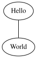
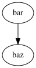

Using Sphinx for kernel documentation¶
The Linux kernel uses Sphinx to generate pretty documentation from
reStructuredText files under Documentation. To build the documentation in
HTML or PDF formats, use make htmldocs or make pdfdocs. The generated
documentation is placed in Documentation/output.
The reStructuredText files may contain directives to include structured documentation comments, or kernel-doc comments, from source files. Usually these are used to describe the functions and types and design of the code. The kernel-doc comments have some special structure and formatting, but beyond that they are also treated as reStructuredText.
Finally, there are thousands of plain text documentation files scattered around
Documentation. Some of these will likely be converted to reStructuredText
over time, but the bulk of them will remain in plain text.
Sphinx Install¶
The ReST markups currently used by the Documentation/ files are meant to be
built with Sphinx version 1.7 or higher.
There’s a script that checks for the Sphinx requirements. Please see Checking for Sphinx dependencies for further details.
Most distributions are shipped with Sphinx, but its toolchain is fragile, and it is not uncommon that upgrading it or some other Python packages on your machine would cause the documentation build to break.
A way to avoid that is to use a different version than the one shipped
with your distributions. In order to do so, it is recommended to install
Sphinx inside a virtual environment, using virtualenv-3
or virtualenv, depending on how your distribution packaged Python 3.
Note
It is recommended to use the RTD theme for html output. Depending on the Sphinx version, it should be installed separately, with
pip install sphinx_rtd_theme.Some ReST pages contain math expressions. Due to the way Sphinx works, those expressions are written using LaTeX notation. It needs texlive installed with amsfonts and amsmath in order to evaluate them.
In summary, if you want to install Sphinx version 2.4.4, you should do:
$ virtualenv sphinx_2.4.4
$ . sphinx_2.4.4/bin/activate
(sphinx_2.4.4) $ pip install -r Documentation/sphinx/requirements.txt
After running . sphinx_2.4.4/bin/activate, the prompt will change,
in order to indicate that you’re using the new environment. If you
open a new shell, you need to rerun this command to enter again at
the virtual environment before building the documentation.
Image output¶
The kernel documentation build system contains an extension that handles images on both GraphViz and SVG formats (see Figures & Images).
For it to work, you need to install both GraphViz and ImageMagick packages. If those packages are not installed, the build system will still build the documentation, but won’t include any images at the output.
PDF and LaTeX builds¶
Such builds are currently supported only with Sphinx versions 2.4 and higher.
For PDF and LaTeX output, you’ll also need XeLaTeX version 3.14159265.
Depending on the distribution, you may also need to install a series of
texlive packages that provide the minimal set of functionalities
required for XeLaTeX to work.
Checking for Sphinx dependencies¶
There’s a script that automatically check for Sphinx dependencies. If it can recognize your distribution, it will also give a hint about the install command line options for your distro:
$ ./scripts/sphinx-pre-install
Checking if the needed tools for Fedora release 26 (Twenty Six) are available
Warning: better to also install "texlive-luatex85".
You should run:
sudo dnf install -y texlive-luatex85
/usr/bin/virtualenv sphinx_2.4.4
. sphinx_2.4.4/bin/activate
pip install -r Documentation/sphinx/requirements.txt
Can't build as 1 mandatory dependency is missing at ./scripts/sphinx-pre-install line 468.
By default, it checks all the requirements for both html and PDF, including the requirements for images, math expressions and LaTeX build, and assumes that a virtual Python environment will be used. The ones needed for html builds are assumed to be mandatory; the others to be optional.
It supports two optional parameters:
--no-pdfDisable checks for PDF;
--no-virtualenvUse OS packaging for Sphinx instead of Python virtual environment.
Sphinx Build¶
The usual way to generate the documentation is to run make htmldocs or
make pdfdocs. There are also other formats available: see the documentation
section of make help. The generated documentation is placed in
format-specific subdirectories under Documentation/output.
To generate documentation, Sphinx (sphinx-build) must obviously be
installed. For prettier HTML output, the Read the Docs Sphinx theme
(sphinx_rtd_theme) is used if available. For PDF output you’ll also need
XeLaTeX and convert(1) from ImageMagick (https://www.imagemagick.org).
All of these are widely available and packaged in distributions.
To pass extra options to Sphinx, you can use the SPHINXOPTS make
variable. For example, use make SPHINXOPTS=-v htmldocs to get more verbose
output.
It is also possible to pass an extra DOCS_CSS overlay file, in order to customize
the html layout, by using the DOCS_CSS make variable.
By default, the build will try to use the Read the Docs sphinx theme:
If the theme is not available, it will fall-back to the classic one.
The Sphinx theme can be overridden by using the DOCS_THEME make variable.
To remove the generated documentation, run make cleandocs.
Writing Documentation¶
Adding new documentation can be as simple as:
Add a new
.rstfile somewhere underDocumentation.Refer to it from the Sphinx main TOC tree in
Documentation/index.rst.
This is usually good enough for simple documentation (like the one you’re
reading right now), but for larger documents it may be advisable to create a
subdirectory (or use an existing one). For example, the graphics subsystem
documentation is under Documentation/gpu, split to several .rst files,
and has a separate index.rst (with a toctree of its own) referenced from
the main index.
See the documentation for Sphinx and reStructuredText on what you can do with them. In particular, the Sphinx reStructuredText Primer is a good place to get started with reStructuredText. There are also some Sphinx specific markup constructs.
Specific guidelines for the kernel documentation¶
Here are some specific guidelines for the kernel documentation:
Please don’t go overboard with reStructuredText markup. Keep it simple. For the most part the documentation should be plain text with just enough consistency in formatting that it can be converted to other formats.
Please keep the formatting changes minimal when converting existing documentation to reStructuredText.
Also update the content, not just the formatting, when converting documentation.
Please stick to this order of heading adornments:
=with overline for document title:============== Document title ==============
=for chapters:Chapters ========
-for sections:Section -------
~for subsections:Subsection ~~~~~~~~~~
Although RST doesn’t mandate a specific order (“Rather than imposing a fixed number and order of section title adornment styles, the order enforced will be the order as encountered.”), having the higher levels the same overall makes it easier to follow the documents.
For inserting fixed width text blocks (for code examples, use case examples, etc.), use
::for anything that doesn’t really benefit from syntax highlighting, especially short snippets. Use.. code-block:: <language>for longer code blocks that benefit from highlighting. For a short snippet of code embedded in the text, use ``.
the C domain¶
The Sphinx C Domain (name c) is suited for documentation of C API. E.g. a function prototype:
.. c:function:: int ioctl( int fd, int request )
The C domain of the kernel-doc has some additional features. E.g. you can
rename the reference name of a function with a common name like open or
ioctl:
.. c:function:: int ioctl( int fd, int request )
:name: VIDIOC_LOG_STATUS
The func-name (e.g. ioctl) remains in the output but the ref-name changed from
ioctl to VIDIOC_LOG_STATUS. The index entry for this function is also
changed to VIDIOC_LOG_STATUS.
Please note that there is no need to use c:func: to generate cross
references to function documentation. Due to some Sphinx extension magic,
the documentation build system will automatically turn a reference to
function() into a cross reference if an index entry for the given
function name exists. If you see c:func: use in a kernel document,
please feel free to remove it.
list tables¶
The list-table formats can be useful for tables that are not easily laid out in the usual Sphinx ASCII-art formats. These formats are nearly impossible for readers of the plain-text documents to understand, though, and should be avoided in the absence of a strong justification for their use.
The flat-table is a double-stage list similar to the list-table with
some additional features:
column-span: with the role
cspana cell can be extended through additional columnsrow-span: with the role
rspana cell can be extended through additional rowsauto span rightmost cell of a table row over the missing cells on the right side of that table-row. With Option
:fill-cells:this behavior can changed from auto span to auto fill, which automatically inserts (empty) cells instead of spanning the last cell.
options:
:header-rows:[int] count of header rows:stub-columns:[int] count of stub columns:widths:[[int] [int] … ] widths of columns:fill-cells:instead of auto-spanning missing cells, insert missing cells
roles:
:cspan:[int] additional columns (morecols):rspan:[int] additional rows (morerows)
The example below shows how to use this markup. The first level of the staged
list is the table-row. In the table-row there is only one markup allowed,
the list of the cells in this table-row. Exceptions are comments ( .. )
and targets (e.g. a ref to :ref:`last row <last row>` / last row).
.. flat-table:: table title
:widths: 2 1 1 3
* - head col 1
- head col 2
- head col 3
- head col 4
* - row 1
- field 1.1
- field 1.2 with autospan
* - row 2
- field 2.1
- :rspan:`1` :cspan:`1` field 2.2 - 3.3
* .. _`last row`:
- row 3
Rendered as:
table title¶ head col 1
head col 2
head col 3
head col 4
row 1
field 1.1
field 1.2 with autospan
row 2
field 2.1
field 2.2 - 3.3
row 3
Cross-referencing¶
Cross-referencing from one documentation page to another can be done simply by
writing the path to the document file, no special syntax required. The path can
be either absolute or relative. For absolute paths, start it with
“Documentation/”. For example, to cross-reference to this page, all the
following are valid options, depending on the current document’s directory (note
that the .rst extension is required):
See Documentation/doc-guide/sphinx.rst. This always works.
Take a look at sphinx.rst, which is at this same directory.
Read ../sphinx.rst, which is one directory above.
If you want the link to have a different rendered text other than the document’s
title, you need to use Sphinx’s doc role. For example:
See :doc:`my custom link text for document sphinx <sphinx>`.
For most use cases, the former is preferred, as it is cleaner and more suited
for people reading the source files. If you come across a :doc: usage that
isn’t adding any value, please feel free to convert it to just the document
path.
For information on cross-referencing to kernel-doc functions or types, see Writing kernel-doc comments.
Figures & Images¶
If you want to add an image, you should use the kernel-figure and
kernel-image directives. E.g. to insert a figure with a scalable
image format, use SVG (SVG image example):
.. kernel-figure:: svg_image.svg
:alt: simple SVG image
SVG image example

SVG image example¶
The kernel figure (and image) directive supports DOT formatted files, see
A simple example (DOT’s hello world example):
.. kernel-figure:: hello.dot
:alt: hello world
DOT's hello world example

DOT’s hello world example¶
Embedded render markups (or languages) like Graphviz’s DOT are provided by the
kernel-render directives.:
.. kernel-render:: DOT
:alt: foobar digraph
:caption: Embedded **DOT** (Graphviz) code
digraph foo {
"bar" -> "baz";
}
How this will be rendered depends on the installed tools. If Graphviz is installed, you will see a vector image. If not, the raw markup is inserted as literal-block (Embedded DOT (Graphviz) code).

Embedded DOT (Graphviz) code¶
The render directive has all the options known from the figure directive,
plus option caption. If caption has a value, a figure node is
inserted. If not, an image node is inserted. A caption is also needed, if
you want to refer to it (Embedded SVG markup).
Embedded SVG:
.. kernel-render:: SVG
:caption: Embedded **SVG** markup
:alt: so-nw-arrow
<?xml version="1.0" encoding="UTF-8"?>
<svg xmlns="http://www.w3.org/2000/svg" version="1.1" ...>
...
</svg>

Embedded SVG markup¶